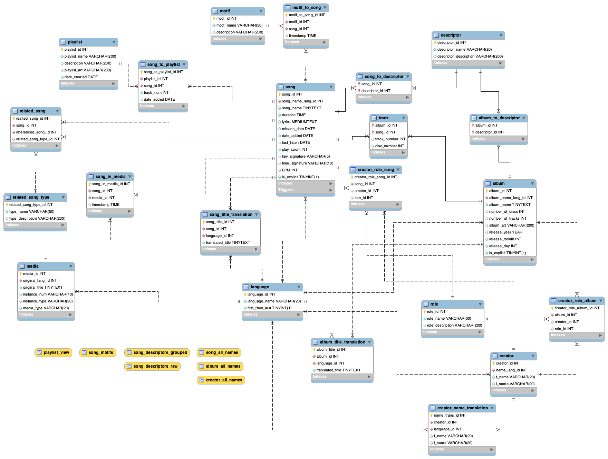

A detailed, flexible digital audio database.

The purpose of this database is to organize and manage digital audio files, allowing for high levels of detail about each track and places it is used.The target users for this database would be music lovers who want to manage their digital music collection like old school iTunes but with more features. They would be able to see a song’s basic information, such as name, album, artist, producer, genre, etc. Unlike iTunes, users will be able to assign a song multiple genres or tags if they apply. They would also be able to create playlists and be able to search for playlists that contain a specific song. If a song has a title or other information in a language other than English, the user should be able to find the song by searching for that information in either language, while it is still clear which name is the “official” name from the audio file’s source.The biggest feature that differs from traditional music databases is the ability to track media that each song appears in. A user should be able to be able to keep track of what pieces of media a song appears in as well as the timestamps for when they play. Conversely, if a piece of media is in the database, the user can look at it and see what audio from that piece of media is also in the database and when each occurs.
I planned out the design and diagrams and wrote the creation statements for my SQL database.
This was an individual project.
This is only the first step of my goal to create an audio database that has more organizational options and flexibility than those that currently exist. Commercial audio databases currently do not allow pieces to have multiple names or spellings of titles or artists listed. Musindex allows for advanced searches based on a song’s attributes, making cataloging and retrieval more convenient.